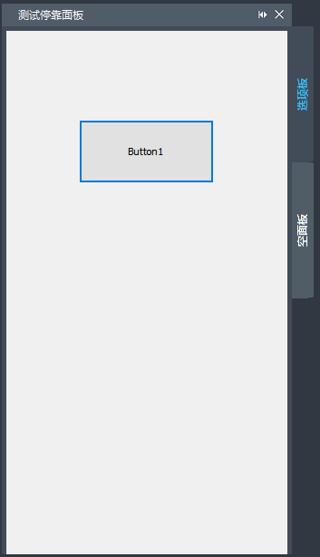
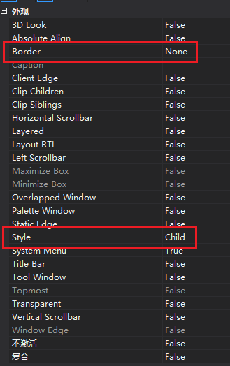

对于各式各样展示数据以及设置的面板，总是以对话框的形式显示，会产生操作上的不便，例如无法在操作绘图空间时，同步查看面板上数据的变换。 这时我们可以通过停靠面板的方式，将面板固定在CAD的界面上，方便用户在操作绘图空间时，随时查看面板上的数据。

创建自定义对话框控件
创建一个对话框用来放置所需控件，然后打开对话框属性框，将Border设置为None，Style设置为Child：

设计完成后，生成对应的对话框类。
创建Palette
每个Palette相当于一个标签页，在一个停靠面板中可以存在多个标签页。
在工程中添加一个自定义类，基类设置为CZdUiPalette，同时添加以下内容：
// 头文件
class CMyPalette :
public CZdUiPalette
{
DECLARE_DYNAMIC(CMyPalette)
public:
CMyPalette();
~CMyPalette();
protected:
DECLARE_MESSAGE_MAP()
afx_msg int OnCreate(LPCREATESTRUCT lpCreateStruct); // 初始化对话框
afx_msg void OnSize(UINT nType, int cx, int cy); // 根据面板大小设置对话框大小
afx_msg void OnDestroy(); // 销毁对话框
private:
CMyControl* m_dlg; //上一步中自定义的对话框对象
};
// cpp文件
IMPLEMENT_DYNAMIC(CMyPalette, CZdUiPalette)
CMyPalette::CMyPalette()
: m_dlg(nullptr) {
}
CMyPalette::~CMyPalette() {
}
BEGIN_MESSAGE_MAP(CMyPalette, CZdUiPalette)
ON_WM_CREATE()
ON_WM_SIZE()
ON_WM_DESTROY()
END_MESSAGE_MAP()
int CMyPalette::OnCreate(LPCREATESTRUCT lpCreateStruct) {
if (CZdUiPalette::OnCreate(lpCreateStruct) == -1) {
return -1;
}
// 初始化对话框并以非模态方式显示
if (!m_dlg) {
m_dlg = new CMyControl(this);
}
m_dlg->Create(IDD_DIALOG2, this);
m_dlg->ShowWindow(SW_SHOW);
return 0;
}
void CMyPalette::OnSize(UINT nType, int cx, int cy) {
// 根据面板大小重新设置对话框的大小
if (m_dlg) {
m_dlg->MoveWindow(0, 0, cx, cy);
}
CZdUiPalette::OnSize(nType, cx, cy);
}
void CMyPalette::OnDestroy() {
// 销毁对话框
if (m_dlg) {
m_dlg->DestroyWindow();
m_dlg = nullptr;
}
CZdUiPalette::OnDestroy();
}
创建PaletteSet
新建面板后，通过AddPalette将自定义的Palette添加面板中，可以通过EnableDocking设置允许停靠的位置：
CMyPalette* myPalette = nullptr;
CZdUiPalette* empty = nullptr;
CZdUiPaletteSet* myPaletteSet = nullptr;
void addPalette() {
// 切换资源，防止资源冲突
CZcModuleResourceOverride res;
if (!myPaletteSet) {
CRect rc(0, 0, 400, 400);
// 初始化面板
myPaletteSet = new CZdUiPaletteSet();
myPaletteSet->Create(L"测试停靠面板", WS_OVERLAPPED | WS_DLGFRAME, rc, zcedGetZcadFrame());
// 创建自定义的选项板
myPalette = new CMyPalette();
myPalette->Create(WS_CHILD | WS_VISIBLE, L"选项板", myPaletteSet);
myPaletteSet->AddPalette(myPalette);
// 空选项板演示停靠面板中多标签页样式
empty = new CZdUiPalette();
empty->Create(WS_CHILD | WS_VISIBLE, L"空面板", myPaletteSet);
myPaletteSet->AddPalette(empty);
// 设置允许停靠的位置
myPaletteSet->EnableDocking(CBRS_ALIGN_LEFT | CBRS_ALIGN_RIGHT);
// 恢复上一次停靠或浮动的位置，首次创建则根据参数默认停靠，参数默认为停靠左边
myPaletteSet->RestoreControlBar();
}
// 显示停靠面板
zcedGetZcadFrame()->ShowControlBar(myPaletteSet, TRUE, FALSE);
}